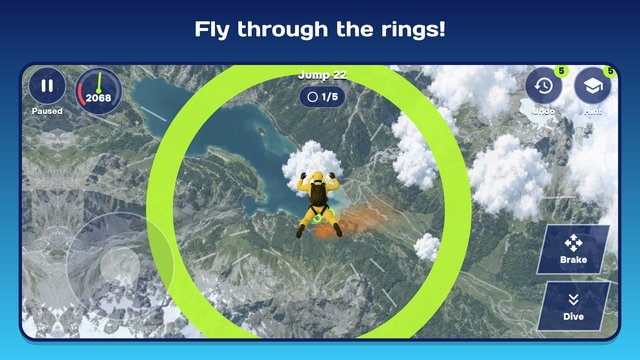

Skydive Hero
Step out of the plane door and fly! The wind whistles, the ground is four kilometres below, and there is a mission to finish before your parachute opens.
A realistic freefall right on your phone: real clouds, fields and cities below you. Play as a man or a woman, steer through rings, dive head-down to catch up with your friends and spread out to slow down. Take each other's hands to close the circle, spin flips, rolls, a pirouette and twisting flips in the glowing bands, catch the teddy bear dropped from the plane and stay in the camera diver's frame. Gulls, drones and storm clouds are best flown around. At 1000 metres it all comes down to one moment: mission done, and a bright canopy opens. Not quite? A giant haystack gives the hero a soft landing.

- 300 jumps in three rounds of rising difficulty: a summer meadow, the sea coast, mountains, a desert canyon at sunset, a megapolis, tropical islands, a thunderstorm, the night city, the polar aurora and the stratosphere, with something new every 10-15 jumps.
- Nine tricks: front and back flips, rolls, a pirouette and four twisting flips, the body turning in 3D.
- All kinds of missions: rings, group jumps, tricks, catches, filming with the camera diver and clean flights with no bumps.
- The locker: 12 suits, each with its own canopy and smoke colour; a logbook of your records.
- Hold the phone sideways: the left thumb steers, the right one dives, brakes and does tricks.
- Made a mistake? "Rewind" takes the jump back 5 seconds, and the instructor shows you where to fly.
- A jump of the day, the same for everyone, and daily tasks.
- Play offline, in English and Russian.
If you like, one reminder when you have been away for a week; you can turn it off in the settings. The door is open, jump!